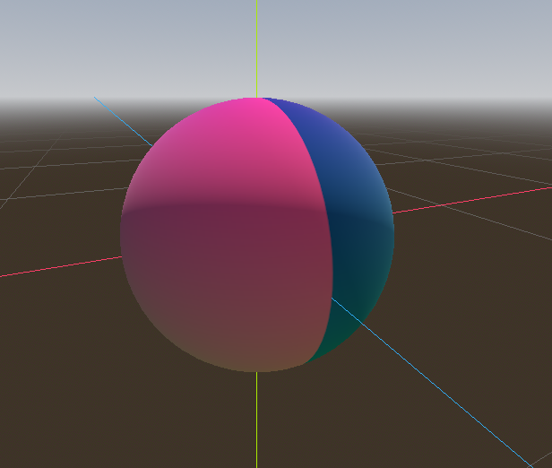
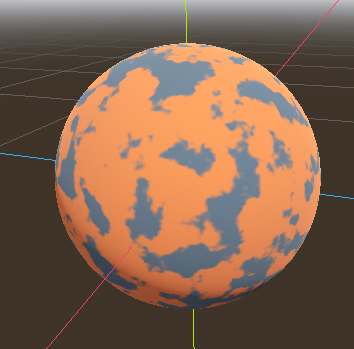
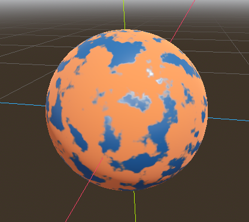

Using a SubViewport as a texture
Introduction
This tutorial will introduce you to using the SubViewport as a texture that can be applied to 3D objects. In order to do so, it will walk you through the process of making a procedural planet like the one below:

Note
This tutorial does not cover how to code a dynamic atmosphere like the one this planet has.
This tutorial assumes you are familiar with how to set up a basic scene including: a Camera3D, a light source, a MeshInstance3D with a Primitive Mesh, and applying a StandardMaterial3D to the mesh. The focus will be on using the SubViewport to dynamically create textures that can be applied to the mesh.
In this tutorial, we'll cover the following topics:
How to use a SubViewport as a render texture
Mapping a texture to a sphere with equirectangular mapping
Fragment shader techniques for procedural planets
Setting a Roughness map from a Viewport Texture
Setting up the scene
Create a new scene and add the following nodes exactly as shown below.

Go into the the MeshInstance3D and make the mesh a SphereMesh
Setting up the SubViewport
Click on the SubViewport node and set its size to (1024, 512). The
SubViewport can actually be any size so long as the width is double the
height. The width needs to be double the height so that the image will accurately map onto the
sphere, as we will be using equirectangular projection, but more on that later.
Next disable 3D. We will be using a ColorRect to render the surface, so we don't need 3D either.

Select the ColorRect and in the inspector set the anchors preset to Full Rect.
This will ensure that the ColorRect takes up the entire SubViewport.

Next, we add a Shader Material to the ColorRect (ColorRect > CanvasItem > Material > Material > New ShaderMaterial).
Note
Basic familiarity with shading is recommended for this tutorial. However, even if you are new to shaders, all the code will be provided, so you should have no problem following along.
Click the dropdown menu button for the shader material and click / Edit. From here go to Shader > New Shader.
give it a name and click "Create". click the shader in the inspector to open the shader editor. Delete the default code
and add the following:
shader_type canvas_item;
void fragment() {
COLOR = vec4(UV.x, UV.y, 0.5, 1.0);
}
save the shader code, you'll see in the inspector that the above code renders a gradient like the one below.

Now we have the basics of a SubViewport that we render to and we have a unique image that we can apply to the sphere.
Applying the texture
Now go into the MeshInstance3D and add a StandardMaterial3D to it. No need for a special Shader Material (although that would be a good idea for more advanced effects, like the atmosphere in the example above).
MeshInstance3D > GeometryInstance > Geometry > Material Override > New StandardMaterial3D
Then click the dropdown for the StandardMaterial3D and click "Edit"
Go to the "Resource" section and check the Local to scene box. Then, go to the "Albedo" section
and click beside the "Texture" property to add an Albedo Texture. Here we will apply the texture we made.
Choose "New ViewportTexture"

Click on the ViewportTexture you just created in the inspector, then click "Assign". Then, from the menu that pops up, select the Viewport that we rendered to earlier.

Your sphere should now be colored in with the colors we rendered to the Viewport.

Notice the ugly seam that forms where the texture wraps around? This is because we are picking a color based on UV coordinates and UV coordinates do not wrap around the texture. This is a classic problem in 2D map projection. Game developers often have a 2-dimensional map they want to project onto a sphere, but when it wraps around, it has large seams. There is an elegant workaround for this problem that we will illustrate in the next section.
Making the planet texture
So now, when we render to our SubViewport, it appears magically on the sphere. But there is an ugly
seam created by our texture coordinates. So how do we get a range of coordinates that wrap around
the sphere in a nice way? One solution is to use a function that repeats on the domain of our texture.
sin and cos are two such functions. Let's apply them to the texture and see what happens. Replace the
existing color code in the shader with the following:
COLOR.xyz = vec3(sin(UV.x * 3.14159 * 4.0) * cos(UV.y * 3.14159 * 4.0) * 0.5 + 0.5);

Not too bad. If you look around, you can see that the seam has now disappeared, but in its place, we have pinching at the poles. This pinching is due to the way Godot maps textures to spheres in its StandardMaterial3D. It uses a projection technique called equirectangular projection, which translates a spherical map onto a 2D plane.
Note
If you are interested in a little extra information on the technique, we will be converting from spherical coordinates into Cartesian coordinates. Spherical coordinates map the longitude and latitude of the sphere, while Cartesian coordinates are, for all intents and purposes, a vector from the center of the sphere to the point.
For each pixel, we will calculate its 3D position on the sphere. From that, we will use
3D noise to determine a color value. By calculating the noise in 3D, we solve the problem
of the pinching at the poles. To understand why, picture the noise being calculated across the
surface of the sphere instead of across the 2D plane. When you calculate across the
surface of the sphere, you never hit an edge, and hence you never create a seam or
a pinch point on the pole. The following code converts the UVs into Cartesian
coordinates.
float theta = UV.y * 3.14159;
float phi = UV.x * 3.14159 * 2.0;
vec3 unit = vec3(0.0, 0.0, 0.0);
unit.x = sin(phi) * sin(theta);
unit.y = cos(theta) * -1.0;
unit.z = cos(phi) * sin(theta);
unit = normalize(unit);
And if we use unit as an output COLOR value, we get:

Now that we can calculate the 3D position of the surface of the sphere, we can use 3D noise to make the planet. We will be using this noise function directly from a Shadertoy:
vec3 hash(vec3 p) {
p = vec3(dot(p, vec3(127.1, 311.7, 74.7)),
dot(p, vec3(269.5, 183.3, 246.1)),
dot(p, vec3(113.5, 271.9, 124.6)));
return -1.0 + 2.0 * fract(sin(p) * 43758.5453123);
}
float noise(vec3 p) {
vec3 i = floor(p);
vec3 f = fract(p);
vec3 u = f * f * (3.0 - 2.0 * f);
return mix(mix(mix(dot(hash(i + vec3(0.0, 0.0, 0.0)), f - vec3(0.0, 0.0, 0.0)),
dot(hash(i + vec3(1.0, 0.0, 0.0)), f - vec3(1.0, 0.0, 0.0)), u.x),
mix(dot(hash(i + vec3(0.0, 1.0, 0.0)), f - vec3(0.0, 1.0, 0.0)),
dot(hash(i + vec3(1.0, 1.0, 0.0)), f - vec3(1.0, 1.0, 0.0)), u.x), u.y),
mix(mix(dot(hash(i + vec3(0.0, 0.0, 1.0)), f - vec3(0.0, 0.0, 1.0)),
dot(hash(i + vec3(1.0, 0.0, 1.0)), f - vec3(1.0, 0.0, 1.0)), u.x),
mix(dot(hash(i + vec3(0.0, 1.0, 1.0)), f - vec3(0.0, 1.0, 1.0)),
dot(hash(i + vec3(1.0, 1.0, 1.0)), f - vec3(1.0, 1.0, 1.0)), u.x), u.y), u.z );
}
Note
All credit goes to the author, Inigo Quilez. It is published under the MIT licence.
Now to use noise, add the following to the fragment function:
float n = noise(unit * 5.0);
COLOR.xyz = vec3(n * 0.5 + 0.5);

Note
In order to highlight the texture, we set the material to unshaded.
You can see now that the noise indeed wraps seamlessly around the sphere. Although this looks nothing like the planet you were promised. So let's move onto something more colorful.
Coloring the planet
Now to make the planet colors. While there are many ways to do this, for now, we will stick with a gradient between water and land.
To make a gradient in GLSL, we use the mix function. mix takes two values to interpolate
between and a third argument to choose how much to interpolate between them; in essence,
it mixes the two values together. In other APIs, this function is often called lerp.
However, lerp is typically reserved for mixing two floats together; mix can take any
values whether it be floats or vector types.
COLOR.xyz = mix(vec3(0.05, 0.3, 0.5), vec3(0.9, 0.4, 0.1), n * 0.5 + 0.5);
The first color is blue for the ocean. The second color is a kind of reddish color (because
all alien planets need red terrain). And finally, they are mixed together by n * 0.5 + 0.5.
n smoothly varies between -1 and 1. So we map it into the 0-1 range that mix expects.
Now you can see that the colors change between blue and red.

That is a little more blurry than we want. Planets typically have a relatively clear separation between
land and sea. In order to do that, we will change the last term to smoothstep(-0.1, 0.0, n).
And thus the whole line becomes:
COLOR.xyz = mix(vec3(0.05, 0.3, 0.5), vec3(0.9, 0.4, 0.1), smoothstep(-0.1, 0.0, n));
What smoothstep does is return 0 if the third argument is below the first and 1 if the
third argument is larger than the second and smoothly blends between 0 and 1 if the third number
is between the first and the second. So in this line, smoothstep returns 0 whenever n is less than -0.1
and it returns 1 whenever n is above 0.

One more thing to make this a little more planet-y. The land shouldn't be so blobby; let's make the edges
a little rougher. A trick that is often used in shaders to make rough looking terrain with noise is
to layer levels of noise over one another at various frequencies. We use one layer to make the
overall blobby structure of the continents. Then another layer breaks up the edges a bit, and then
another, and so on. What we will do is calculate n with four lines of shader code
instead of just one. n becomes:
float n = noise(unit * 5.0) * 0.5;
n += noise(unit * 10.0) * 0.25;
n += noise(unit * 20.0) * 0.125;
n += noise(unit * 40.0) * 0.0625;
And now the planet looks like:

Making an ocean
One final thing to make this look more like a planet. The ocean and the land reflect light differently.
So we want the ocean to shine a little more than the land. We can do this by passing a fourth value
into the alpha channel of our output COLOR and using it as a Roughness map.
COLOR.a = 0.3 + 0.7 * smoothstep(-0.1, 0.0, n);
This line returns 0.3 for water and 1.0 for land. This means that the land is going to be quite
rough, while the water will be quite smooth.
And then, in the material, under the "Metallic" section, make sure Metallic is set to 0 and
Specular is set to 1. The reason for this is the water reflects light really well, but
isn't metallic. These values are not physically accurate, but they are good enough for this demo.
Next, under the "Roughness" section set the roughness texture to a
Viewport Texture pointing to our planet texture SubViewport.
Finally, set the Texture Channel to Alpha. This instructs the renderer to use the alpha
channel of our output COLOR as the Roughness value.

You'll notice that very little changes except that the planet is no longer reflecting the sky.
This is happening because, by default, when something is rendered with an
alpha value, it gets drawn as a transparent object over the background. And since the default background
of the SubViewport is opaque, the alpha channel of the
Viewport Texture is 1, resulting in the planet texture being
drawn with slightly fainter colors and a Roughness value of 1 everywhere. To correct this, we
go into the SubViewport and enable the "Transparent Bg" property. Since we are now
rendering one transparent object on top of another, we want to enable blend_premul_alpha:
render_mode blend_premul_alpha;
This pre-multiplies the colors by the alpha value and then blends them correctly together. Typically,
when blending one transparent color on top of another, even if the background has an alpha of 0 (as it
does in this case), you end up with weird color bleed issues. Setting blend_premul_alpha fixes that.
Now the planet should look like it is reflecting light on the ocean but not the land. move around the OmniLight3D in the scene so you can see the effect of the reflections on the ocean.

And there you have it. A procedural planet generated using a SubViewport.